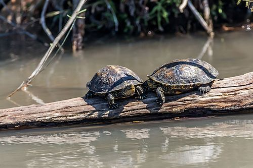

În adâncurile oceanelor și pe plajele liniștite, o prezență străveche a traversat vremea: țestoasele. De la cele mai mici specii care își croiesc drum prin nisip, până la gigantii marini care străbat mările lumii, aceste creaturi sunt martore ale unei evoluții care se întinde pe milioane de ani. În acest documentar, vom explora viața acestor supraviețuitori ai timpului, obiceiurile lor fascinante și provocările majore cu care se confruntă în lumea modernă. De la migrarea pe distanțe epice până la protejarea ouălor prețioase pe plajele vulnerabile, țestoasele ne arată ce înseamnă răbdarea, reziliența și legătura adâncă cu natura.
Este adaptată la mediul terestru. În România, trăiește în pădurile și regiunile de stepă din Oltenia, Banat și Dobrogea. Speciile întâlnite în România sunt țestoasa de uscat bănățeană sau țestoasa lui Hermanni (Testudo hermanni) și țestoasa de uscat dobrogeană (Testudo graeca). Țestoasa de uscat se recunoaște după corpul ei scurt, acoperit cu un țest format din 2 părți: carapacea (la partea superioară, bombată, de culoare maroniu-roșcat) plastronul (la partea inferioară, de culoare deschisă) Ele sunt unite pe laturi, lăsând două deschizături prin care ies capul și membrele anterioare, iar la partea posterioară, membrele posterioare și coada. Țesutul este format din plăci osoase bine sudate, acoperite de plăci cornoase Coastele și vertebrele sunt concrescute cu carapacea. Capul, gâtul, picioarele și coada sunt acoperite de o piele solzoasă de culoare cenușie. Pe lângă organele de simț, asemănătoare cu ale șopârlei, există două fălci învelite într-o materie cornoasă ce formează un fel de cioc, cu margini tăioase și fără dinți. Masculul se deosebește vizibil de femelă, în general prin dimensiunea cozii care este mai mare la mascul și a plastronului care la mascul este concav. Țestoasele sunt animale greoaie, care se deplasează încet din cauza conformației și a țesutului. Cele patru membre sunt scurte, așezate lateral și terminate cu degete scurte, prevăzute cu gheare. Se hrănește cu ierburi sălbatice, fructe, insecte, melci și viermi pe care le taie cu marginea ciocului. Respirația și înmulțirea este la fel ca la șerpi și șopârle. Hibernarea ideală este între 3 și 9° Celsius, cu o umiditate cuprinsă între 70 și 90%.

Țestoasa europeană de apă dulce (Emys orbicularis) trăiește în lacuri și bălți, rareori pe uscat. Este adaptată secundar la viața terestră. Se deosebește de țestoasa de uscat prin următoarele caractere:
1.este carnivoră
2.carapacea este mai mare
3.de culoare negricioasă
4.asemănătoare mâlului
5.degetele sunt dezlipite prin membrană interdigitală
Multi dintre voi probabil v-ati intrebat cum a primit testoasa carapacea.Iata cateva legende despre aceasta.
Se spune că, la început, țestoasa era un animal moale, fără carapace, vulnerabil în fața prădătorilor. Într-o zi, a rugat zeii să-i ofere o protecție, deoarece era lentă și nu putea fugi ca alte animale. Zeii au fost impresionați de smerenia și istețimea țestoasei, așa că i-au oferit un dar special: o carapace tare, care să o protejeze. Însă, ca să nu devină prea puternică, zeii i-au făcut mersul și mai lent, astfel încât să fie în continuare nevoită să se bazeze pe inteligența ei pentru a supraviețui.

O altă poveste spune că țestoasa a fost odată o creatură obișnuită, fără carapace. Într-o zi, un foc ceresc a început să cadă pe pământ, iar toate animalele fugeau speriate. Țestoasa, neavând unde să se ascundă, s-a rugat Marelui Spirit să o ajute. Ca răspuns, Marele Spirit i-a dăruit o carapace rezistentă, făcută dintr-un material magic, care putea să reziste la foc și la atacurile altor animale. De atunci, țestoasa a devenit simbolul protecției și al răbdării în multe culturi indigene.
În unele legende chinezești, țestoasa a fost inițial o creatură acvatică fragilă. Un dragon înțelept, văzând că are nevoie de protecție, i-a oferit o bucată din armura sa, transformând-o într-un simbol al longevității și al înțelepciunii. În mitologia chineză, țestoasa este considerată un simbol cosmic, reprezentând stabilitatea și echilibrul lumii, având carapacea rotundă ca cerul și partea de jos plată ca pământul.